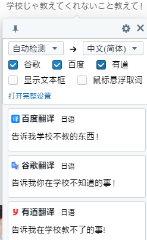
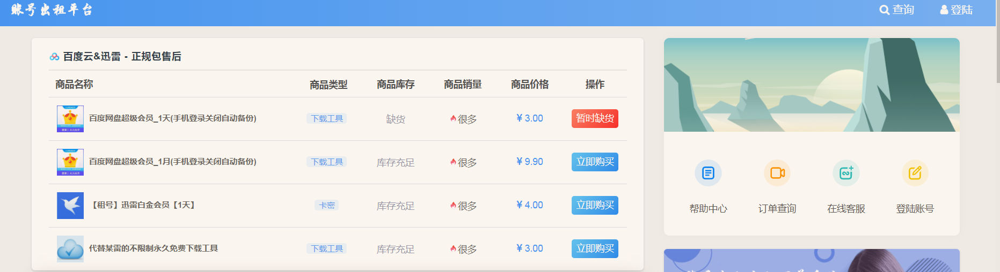

1. 功能网站
1. 压缩图片网
2. 特殊符号网
https://www.jiuwa.net/fuhao/agg/16/
3. 划词翻译
2.2020-10-2 00:59:27
3.来源：灵逗士；
4.预览：

5.
4. 百度脑图
1.用来画思维导图的；2020-11-9 10:17:31
2.陈文杰分享的；
3.https://naotu.baidu.com/file/a6b937d7869000a5fd27a57e0153e53b
2020-11-9 11:03:50
2. 学习网
2.1 MyBatis-Plus
2.1.1 myBatis
https://mybatis.org/mybatis-3/zh/index.html
2.2 VUE后台
https://github.com/PanJiaChen/vue-admin-template/blob/master/README-zh.md
这是一个极简的 vue admin 管理后台。它只包含了 Element UI & axios & iconfont & permission control & lint，这些搭建后台必要的东西。
1.这是灵逗士自己做的；2020-9-23 03:01:35
2.2 牛客网
上面有题可以做；例如我，可以去上面找web前端的题做；2020-9-23 03:01:59
2.3 图灵社区-书店
1.网址：https://www.ituring.com.cn
- 2021-1-1 15:26:12
3. 云盘
3.1 蓝奏云
- 注意：蓝奏云，只能上传100mb以内的文件
- 空间无限；
3.2 云盘出租
2.预览：

2020-10-7 17:04:00
4. 开拓视野
4.1 IETF
1.http://www.ruanyifeng.com/blog/2011/03/ietf.html
5. 娱乐
5.1 日小说-ESJ
1.https://www.esjzone.cc/forum/1546223660/4256.html
6. 配置
6.1 水晶路由器
2.配置；2020-10-7 19:08:02